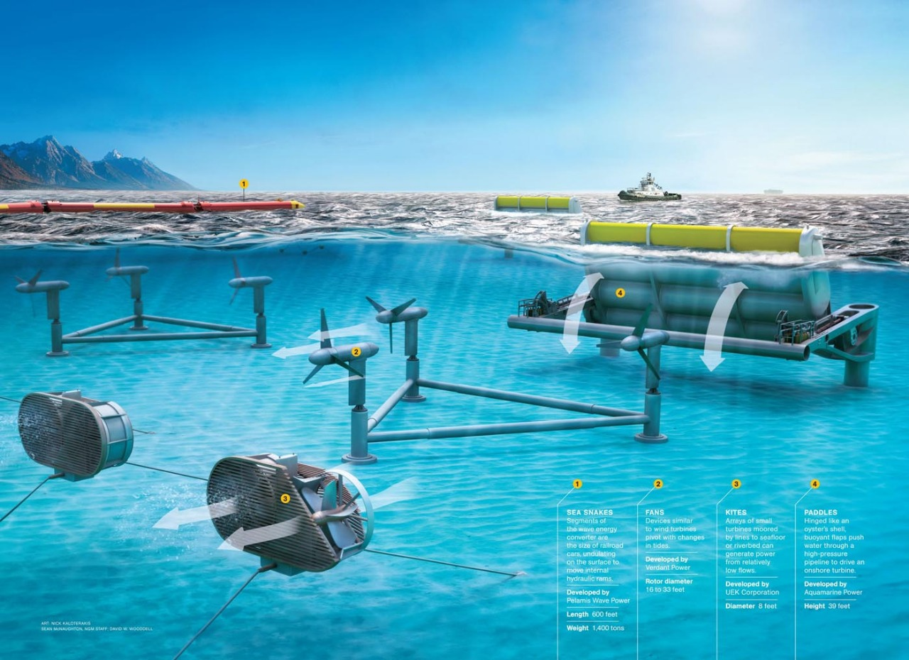

Activity 3 — Tidal Power
Problem Statement
Activity 3: Prepare the architecture of a tidal power plant suitable for a coastal village.

(Figure: Reference image for Tidal Power Plant)
Overview
Tidal systems exploit predictable gravitationally driven sea level changes and currents. Range projects impound water to create head across turbines, whereas stream projects place underwater turbines directly in fast currents. Because tides are forecastable years ahead, output can be aligned with demand windows.
Source of energy
The energy resource stems from Earth–Moon–Sun gravitational interactions which set up periodic variations in sea level and current velocity. Site potential depends on amplitude (for range) or current speed and cross‑section (for stream).
Conversion process
Civil works channel water through turbines. Axial or cross‑flow rotors spin a shaft coupled to a generator. Power is conditioned and stepped up for grid interconnection. Controls and gates schedule generation around ecology, navigation and flood management.
Output / utilization
Electrical energy is delivered to coastal loads or the wider grid. Projects can be hybridized with batteries to shift energy within the tidal cycle, smoothing deliveries during peak demand periods.
Real-world relevance
Tidal power offers highly reliable output and long infrastructure lifetimes. Projects require robust environmental planning including fish passage, sediment transport and habitat protection, but provide resilient coastal energy with minimal visual impact once operational.